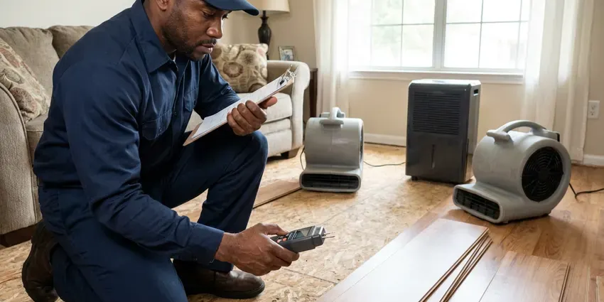

Walls Waterproofing in Green River, WY
A musty basement in Green River, WY usually means water is getting through the walls. We find where it enters and seal it.
- Kerdi, RedGard and Hydro Ban Membranes
- Same-Week Leak Tracing
- Free Written Estimates
- Crack Injection Sealing

Keep Water Out of Your Walls in Green River, WY.
One inspection shows whether you need crack injection, drain tile or an exterior membrane, and we write it all down.
Walls Waterproofing in Green River, WY That Starts With the Leak
JKV Plumbing uses injection resins and cementitious coatings rated for below-grade walls, not paint-store sealers. Those sealers peel. A proper repair in your Green River, WY home starts with a moisture reading on the block, then either crack injection or a drainage fix, then a coating that can take water pushing from the soil side.
Work we handle every week:
- Interior drain tile along the footing
- Crawl space vapor barrier installation
- Below-grade wall waterproofing for basements and crawl spaces

Additional Plumbing Maintenance Services in Green River, WY
Our maintenance and specialty plumbing services in Green River, WY catch small problems before they become emergencies.


Customers
Why Choose JKV Plumbing for Walls Waterproofing in Green River, WY?
Wet foundation walls cost more every season they stay wet. Moisture wicks up into the sill plate, rusts the anchor bolts and gives mold a home on the joists, which makes the eventual repair much bigger. Sealing the wall breaks that cycle.
- Rated Membranes, We install manufacturer-approved systems rated for wet areas.
- Quality Materials, We use proven membranes and injection resins, not hardware-store patch kits.
- Mold Prevention, Drying and sealing a wall quickly keeps mold from taking hold.
Citywide Coverage
Anywhere in Green River, WY, the same wall waterproofing service is available to you. We handle single-family homes, duplexes and small rental properties, and landlords with several units can group inspections into a single trip to save on scheduling. One call covers it.
Experienced Team
Every tech is trained on the liquid and sheet membranes we install, down to the cure time and mil thickness each product calls for. That keeps manufacturer warranties valid. Shortcuts are not allowed.
Safety-First Approach
Excavation next to a foundation can undermine the footing if it is done carelessly. We dig in sections so the wall is never unsupported for long, keep spoil piles back from the trench edge, and backfill in layers. No one steps into a trench that is not protected.
Trusted Certified Green River Plumbing Services Professionals
At JKV Plumbing, we take pride in licensed, certified plumbing services throughout Green River, WY. Those papers on the wall mean something. Our plumbers hold recognized industry credentials, and they follow strict safety and quality rules on every repair, installation and maintenance call we run.
Call Us Now PHCC Plumbing Contractor Recognition
PHCC Plumbing Contractor Recognition Better Business Bureau (BBB) Accreditation
Better Business Bureau (BBB) Accreditation Angi Certified Pro
Angi Certified Pro ISO 9001 Quality Management Certification
ISO 9001 Quality Management CertificationHow We Keep Water Out of Walls in Green River, WY
Foundation Crack Repair in Green River
Crack injection takes about two hours per crack. We set injection ports every 8 to 12 inches along the crack, seal the surface with epoxy paste, and pump in resin starting at the lowest port and working up until it pushes out the next port. Polyurethane stays flexible if the wall moves a little, and epoxy bonds the two sides back together. The surface paste gets ground off once it cures.

Cost-Effective Waterproofing Solutions in Green River, WY
Not every wet wall needs a $15,000 excavation. Sometimes the fix is a downspout extension and regrading the soil so it slopes away from the house, six inches of drop over the first ten feet, and that costs a few hundred dollars. We start with the cheapest fix that will actually work. Every option comes written out with its price.
Shower Wall Waterproofing in Green River
Tile and grout are not waterproof. Water passes through grout every time you shower, so the layer behind the tile, cement board with a membrane or a foam board system, is what actually keeps the studs dry. We tear out failed tile, install new backer, and apply Schluter Kerdi, RedGard or Hydro Ban at the thickness the manufacturer calls for. We reinforce corners, niches and valve penetrations with fabric or preformed pieces.
Plumbing Leak Behind Walls in Green River
A drip from a shower valve cartridge, a sweated copper stub or a loose drain slip nut can soak a wall cavity for months before paint bubbles. We find it with a moisture meter, a thermal camera that shows the cool wet spot, and a pressure test on the supply lines. Then we cut a clean access hole. The bad fitting or section of pipe gets replaced. Wet insulation comes out, and fans dry the cavity before we close it up.
Waterproofing for Older Homes in Green River, WY
Houses built before modern drainage rules often have no footing drain at all, or a clay tile drain that collapsed decades ago. Older homes may still have galvanized supply lines that clog with rust and scale, causing low pressure and discolored water. Fieldstone and old brick foundations need breathable products. Sealing soft old brick with a rigid coating traps water inside it and makes the face spall off over a few seasons, so we use lime-compatible or vapor-open coatings and pair them with interior drain tile. We repoint failed mortar joints before sealing.
Basement Wall Sealing in Green River, WY
Concrete block is porous, and its hollow cores fill with water like a sponge. Long heating seasons in Green River and across the state mean water heaters and heating systems work hard for much of the year. We drill weep holes at the bottom course to drain the cores, then seal the face with a masonry waterproofer that lets vapor out but stops liquid water. The musty smell usually fades within weeks. The weep holes empty into interior drain tile when there is one.
Drainage System Integration in Green River, WY
Water has to go somewhere once a wall is sealed. Exterior footing drains, interior drain tile and surface French drains all do the same job at different depths. We match the drain to where the water comes from, which might be a high water table, a yard that slopes toward the house, or a gutter dumping at the corner. Downspouts get extended at least four feet out.

Laundry Room and Utility Wall Waterproofing in Green River, WY
Rubber washing machine hoses burst. We swap them for braided stainless hoses, put a drain pan under the washer piped to a floor drain where one is available, and install a quarter-turn shutoff or an automatic leak valve on the supply box. Water heaters get a pan too. Behind the heater we can install moisture-resistant board and seal it.
Wall Waterproofing Near Me in Green River, WY
Searching for wall waterproofing near me in Green River, WY usually means there is already a wet spot on the wall. JKV Plumbing sends a tech with a moisture meter and a thermal camera, often within a day or two of your call, to find out how far the water has spread. We inspect a small damp patch as carefully as a flooded basement.
Moisture meters and thermal cameras ride on every truck. That lets us tell you what is wrong before we leave, including where the water is coming from and which repair fits, instead of scheduling a second trip just to diagnose. Quotes come in writing.
JKV Plumbing at a Glance
- Fully licensed plumbing team covering Green River, WY
- Same-day appointments and 24/7 emergency response
- Upfront, flat-rate pricing before work begins
- 4.9-star rated by 782+ Wyoming customers
Green River Map
Green River Information
- Population
- 11,496
- Area codes
- Local
- Service area
- Green River and towns within a 40 mile drive
- Nearby
- Rock Springs, Evanston, Lander, Rawlins
Foundation walls in Green River, WY take water from two directions, rain soaking the soil outside and hydrostatic pressure pushing through cracks and porous block.
Talk to a Plumber
Reach out to JKV Plumbing for honest, reliable plumbing from people who know the trade in Green River, WY.
Our Specialized Plumbing Services in Green River, WY
At JKV Plumbing, we handle the full list of plumbing services across Green River, WY. We go from leak detection all the way to full system installations, for homes and commercial buildings, and we do it quickly at a fair price. Here are the core services we offer:


From Damp Wall to Sealed Wall in Green River, WY
This is how a damp, stained wall becomes dry and protected.
Request a Quote
Call (307) 393-4049 or use the online form. We set a time that works for you for the on-site visit.
Detailed Inspection
Our tech tracks down where the water is coming from and checks how far the damage reaches. You get the findings in plain terms.
Custom Solution
We build the plan around the leak and the type of foundation, and pick materials that suit the wall.
Frequently Asked Questions About Walls Waterproofing in Green River
Shower wall waterproofing with a membrane system usually runs $1,200 to $3,500 including demolition and backer board, with the new tile priced separately. Block wall sealing outside often costs $800 to $3,000. Foundation waterproofing below grade is usually $2,500 to $8,000.
Damp proofing is usually a thin spray-on asphalt coat. It slows soil moisture but cannot hold back water under hydrostatic pressure. Waterproofing uses thicker membranes, drainage boards and footing drains rated to stop liquid water, which is what a basement in wet soil or a high water table needs.
Always. Sealing a wall with an active leak inside it traps the water, so the studs and sheathing rot faster than if the wall had been left alone. The leak gets repaired and the cavity dried before anything else.
Yes, a lot. Stopping liquid water at the wall drops basement humidity noticeably, and pairing it with a dehumidifier set around 50 percent keeps the air dry enough that mold and mildew have a hard time growing on stored boxes and framing. Musty smells usually fade within weeks.
Anywhere from an afternoon to over a week. Interior crack sealing might take a day or two, while exterior excavation with new footing drains might run several days or longer than a week depending on the size of the house. Wet weather can push exterior work back.
Most systems we install should go 20 to 30 years or longer. Life span comes down to how it was installed, what method was used and what the soil around the house is like. Sump pumps wear out sooner. Most pumps last seven to ten years.
Crack repairs take a few hours. Interior drain tile usually takes one to three days, and a full exterior dig around the whole house can run three to seven days or more depending on weather and how deep the footing sits. Your timeline comes with the quote.
For big jobs, often yes. Excavation, structural changes and drainage changes can require a permit from the Green River building department, and we confirm the requirements before we send the quote. If a permit is needed, we file for it.
What People Are Saying About Our Plumbing Experts?

Karen W.
After our third pinhole leak in copper, we stopped patching. JKV Plumbing gave us a written plan room by room and repiped the house in PEX while we stayed in it. The crew covered our floors every morning and cleaned up every night.
Repiping · Green River, WY
Megan L.
Our upstairs tub drained so slowly that every shower turned into a bath. JKV Plumbing pulled a wad of hair out of the stopper and then snaked the line past the trap. Three months later it still drains fast.
Drain Cleaning · Rawlins, WY
Nathan E.
Our tankless heater kept throwing an error code and shutting off mid shower. The tech flushed the heat exchanger, which was full of scale, and replaced a bad flow sensor. Hot water has been steady for half a year now.
Water Heater Repair · Rock Springs, WYAngela D.
Our sump pump quit during a storm and the water was an inch from the basement carpet. JKV Plumbing put in a new pump with a battery backup that same evening. We have had two heavy rains since. It kicked on both times.
Sump Pump · Jackson, WY
Kevin O.
Before buying our house I paid for a sewer camera inspection. JKV Plumbing found a belly in the line that held standing water about forty feet from the cleanout. We used the video to get the sellers to fix it before closing.
Sewer Camera Inspection · Green River, WY
Mark T.
The floor drain in our office break room backed up every few weeks. The plumber ran a cable, then put a camera down and found roots at a joint about thirty feet out. Seeing it on the screen made the decision easy.
Drain Cleaning · Lander, WY